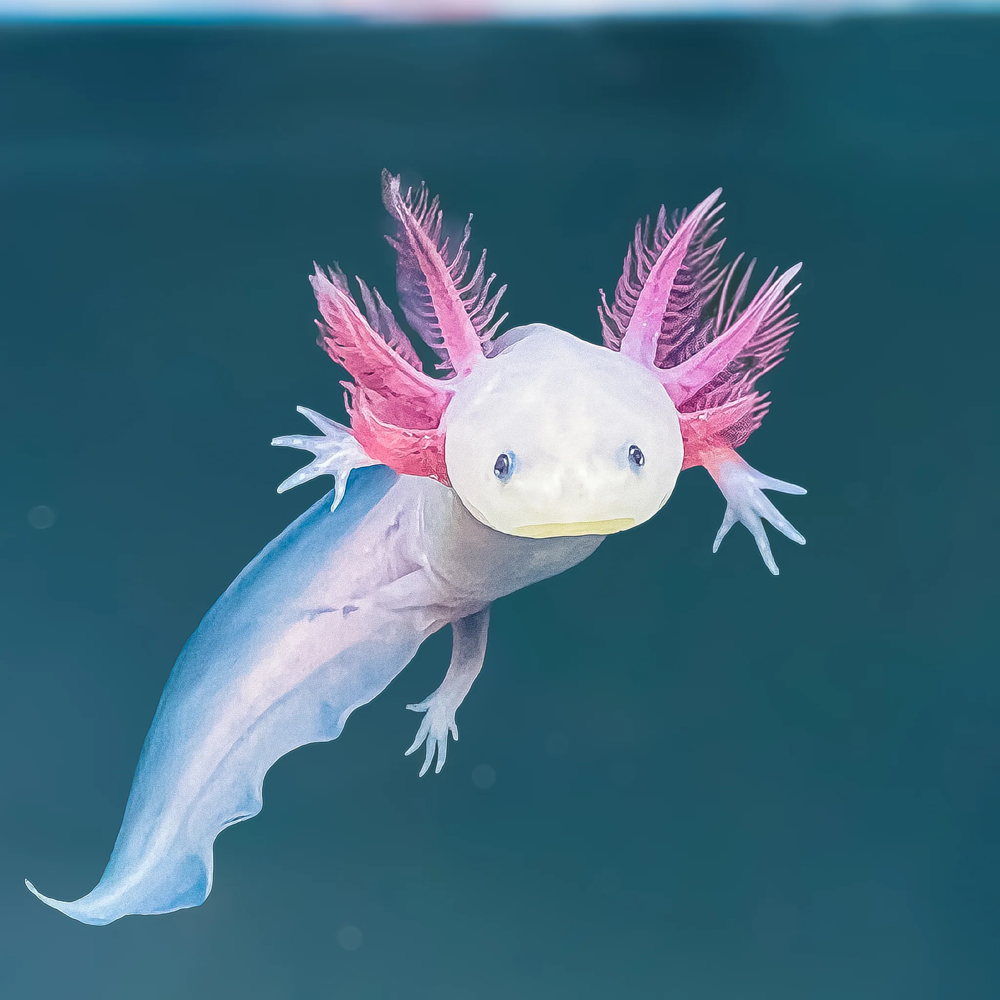

ერთ-ერთი ყველაზე უცნაური ცხოველი მსოფლიოში
Axolotl არის უცნაური ამფიბია, რომელიც ცხოვრობს წყალში. ის ძალიან განსაკუთრებულია რადგან შეუძლია სხეულის ნაწილების აღდგენა — მაგალითად ხელების, ფეხების და კუდის.
ეს ცხოველი ძირითადად ცხოვრობს მექსიკაში და მეცნიერები მას სწავლობენ რეგენერაციის უნარის გამო.

Axolotl მეცნიერებისთვის ძალიან მნიშვნელოვანია რადგან მისი რეგენერაციის უნარი შეიძლება დაეხმაროს მომავალში ადამიანის ორგანოების მკურნალობას და აღდგენას.
Axolotl არის ერთ-ერთი ყველაზე უნიკალური ცხოველი პლანეტაზე.